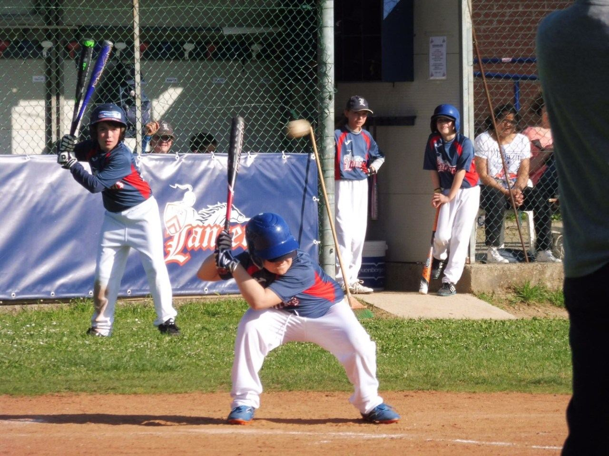

Sventola alta la bandiera dei Lancers per la seconda vittoria consecutiva per l’Under 12 di Zalonici che quando trova squadre con lanciatori non impeccabili va a nozze, per poi contenere gli avversari con una difesa abbastanza solida, anche grazie ai capaci lanciatori Lopez e Paoli che solitamente sono affidabili e garantiscono 5 inning. Il sesto inning è quello più critico, mancando un lanciatore designato, motivo per cui Zalonici deve procedere per tentativi, mandando sul monte di lancio uno o più fra Pellegrini, Manetti, Signorini e Scarpulla. In questi casi l’incertezza si riflette ovviamente anche sul risultato dell’inning. Se gli esperimenti vengono effettuati a risultato acquisito tutto bene, se invece la squadra avversaria riesce a tenere botta e il risultato è in bilico i problemi sono evidenti. Oggi, anche se non sono mancate le battute valide, quasi sempre i nostri riescono ad arrivare in prima base per via di 4 balls del lanciatore sestese. Dalla prima a casa base i lancerini procedono poi con delle “rubate” sfruttando le incertezze avversarie dal monte di lancio e in ricezione.
Alla fine della gara, nonostante la vittoria, Zalonici non è molto soddisfatto della prestazione, avendo i ragazzi commesso degli errori evitabili. Ovviamente lui, in quanto tecnico, cerca sempre di migliorare il gioco, cercando di correggere i ragazzi anche nelle gare vinte.
Questa i protagonisti della gara: Lorenzo Gianrossi, Alberto Lopez, Paolo Manetti, Silvia Onori, Gabriele Paoli, Alessio Pellegrini, Lorenzo Sarubbi, Lorenzo Scarpulla, Alfredo Signorini, Noemi Vecchi.
Primo inning 4-1. Lanciatore Lopez, ricevitore Pellegrini. Lopez elimina subito il n° 27 dell’altra squadra ma poi consente al n° 2 di andare in prima base per 4 balls. Il n° 35 è eliminato per 3 strikes. Il n° 37 batte e il n° 2 riesce a portarsi dalla seconda base a casa. Lopez elimina poi il n° 23. Lopez, Paoli, Pellegrini e Scarpulla sono promossi in prima base per 4 balls. Di questi, a forza di rubate, tornano a casa base Lopez, Pellegrini e Scarpulla. Manetti batte e ne esce fuori un “campanile” altissimo che il Padule non riesce a prendere al volo e Manetti si porta in seconda. Da qui, a forza di rubate, arriva a punto.
Secondo inning 1-0. Lanciatore Lopez, ricevitore Pellegrini. Scarpulla riesce a prendere al volo la battuta del n° 15 sestese, poi Lopez completa l’opera con altre due eliminazioni. Vecchi, dopo aver raggiunto la prima base per 4 balls, è brava a rubare una base dopo l’altra e arrivare a punto. L’inning termina quando, con le basi piene e quindi con le maggiori potenzialità offensive, la battuta di Pellegrini è ripresa al volo.
Terzo inning 4-0. Lanciatore Lopez, ricevitore Pellegrini. Due eliminati ad opera di Lopez e uno da Scarpulla che raccoglie la battuta del n° 2 e transita in prima base con netto anticipo. Scarpulla e Manetti raggiungono la prima base per 4 balls e poi, di base in base, arrivano entrambi a punto. Signorini batte e arriva in prima un attimo prima della pallina, buono quindi. Anche Sarubbi e Vecchi vanno in prima base per base-ball. Signorini e Sarubbi tornano a casa base e l’inning termina.
Quarto inning 2-1. Lanciatore Paoli, ricevitore Scarpulla. La gran battuta del n° 23 consente al n° 37 di portarsi dalla prima a casa base. Lo stesso n° 23 prova a rubare ma Pellegrini lo elimina in terza. Paoli riesce poi a eliminare due battitori avversari per strike-out. In attacco è ancora Paoli il protagonista che batte un altro campanile che il Padule non riesce a prendere al volo e che frutta due basi. Altre due rubate lo portano a punto. Pellegrini, dalla prima base che aveva conquistato per 4 balls, giunge a casa sfruttando un’errata gestione della palla in difesa e porta i Lancers a +9, sancendo la vittoria matematica.
Quinto inning 4-0. Lanciatore Paoli, ricevitore Scarpulla. Paoli elimina i numeri 8 e 36. Il n° 37 invece riesce a ribattere validamente il suo lancio ma la pallina è raccolta da Signorini lancia a Manetti in prima base che lo elimina per un’azione difensiva che era già stata vista più volte nelle gare precedenti. Signorini, Sarubbi, Vecchi e Onori, vanno a punto rubata dopo rubata dopo aver conquistato la prima base per base-ball.
Sesto inning 4-4. Lanciatori Scarpulla, Manetti e Signorini, ricevitore Sarubbi. Giustamente Zalonici consente anche ai lanciatori meno esperti di fare esperienza in gara. Scarpulla lancia, il n° 23 ribatte ma lo stesso Scarpulla risprende e lancia a Manetti in prima base che lo elimina. Successivamente fanno tutto il giro del diamante i numeri 15, 9, 8 e 30, tutti giunti in prima base per 4 balls. Pellegrini batte e poi, di base in base, torna a casa e fa punto. Scarpulla, Manetti e Signorini sono gli autori degli altri punti, tutti giunti in prima base per base-ball. I primi due tornano a casa base rubando tutte le basi, l’ultimo ruba fino alla terza e poi sfrutta la battuta di Lopez.
I ragazzi di Zalonici sono ora attesi da un calendario ostico, con la trasferta sul campo del forte Chianti e il doppio confronto con le squadre di Grosseto.